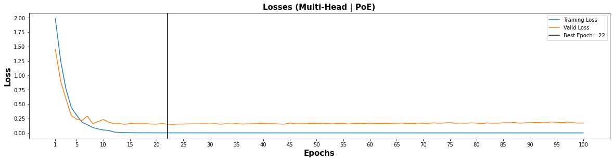

Transformers
Contents
Transformers#
Overview#
This notebook implements Transformer model for HCP (movie watching) data
Transformers were first present by Vaswani, et al. in their paper Attention Is All You Need.
Data Organization#
Same as in the gru + attention notebook
import torch
import pickle
import numpy as np
from ray import tune
import torch.nn as nn
from ray.tune import CLIReporter
from ray.tune.schedulers import ASHAScheduler
with open('Data/HCP_movie_watching.pkl','rb') as f:
TS = pickle.load(f)
print(TS.keys())
dict_keys(['testretest', 'twomen', 'bridgeville', 'pockets', 'overcome', 'inception', 'socialnet', 'oceans', 'flower', 'hotel', 'garden', 'dreary', 'homealone', 'brokovich', 'starwars'])
rel = {}
l = 0
seq_length = 0
time_changes = []
for movie_name, ts in TS.items():
rel[movie_name] = l
l += 1
seq_length = max(seq_length, ts.shape[-2])
time_changes.append(ts.shape[-2])
print(movie_name, ts.shape)
time_changes = np.array(time_changes)
time = [i for i in range(1,seq_length+1)]
testretest (4, 176, 84, 300)
twomen (176, 245, 300)
bridgeville (176, 222, 300)
pockets (176, 189, 300)
overcome (176, 65, 300)
inception (176, 227, 300)
socialnet (176, 260, 300)
oceans (176, 250, 300)
flower (176, 181, 300)
hotel (176, 186, 300)
garden (176, 205, 300)
dreary (176, 143, 300)
homealone (176, 233, 300)
brokovich (176, 231, 300)
starwars (176, 256, 300)
train_feature = []
test_feature = []
train_target = []
test_target = []
for movie_name, ts in TS.items():
pep = 0
if movie_name != "testretest":
for i in ts:
pep += 1
if (pep <= 100):
if i.shape[0]>seq_length:
k = i[:seq_length][:]
train_feature.append(k)
train_target.append(rel[movie_name])
k = i[i.shape[0]-seq_length:][:]
train_feature.append(k)
train_target.append(rel[movie_name])
elif i.shape[0]<seq_length:
k = [[-1]*300]*seq_length
k[seq_length-i.shape[0]:] = i
train_feature.append(k)
k = [[rel[movie_name]] for _ in range(i.shape[0])] + [[-100] for _ in range(seq_length-i.shape[0])]
train_target.append(k)
else:
train_feature.append(i)
train_target.append([[rel[movie_name]] for _ in range(seq_length)])
else:
if i.shape[0]>seq_length:
k = i[:seq_length][:]
test_feature.append(k)
test_target.append(rel[movie_name])
k = i[i.shape[0]-seq_length:][:]
test_feature.append(k)
test_target.append(rel[movie_name])
elif i.shape[0]<seq_length:
k = [[-1]*300]*seq_length
k[seq_length-i.shape[0]:] = i
test_feature.append(k)
k = [[rel[movie_name]] for _ in range(i.shape[0])] + [[-100] for _ in range(seq_length-i.shape[0])]
test_target.append(k)
else:
test_feature.append(i)
test_target.append([[rel[movie_name]] for _ in range(seq_length)])
print(pep)
else:
for jj in ts:
pep = 0
for i in jj:
pep += 1
if (pep <= 106):
if i.shape[0]>seq_length:
k = i[:seq_length][:]
train_feature.append(k)
train_target.append(rel[movie_name])
k = i[i.shape[0]-seq_length:][:]
train_feature.append(k)
train_target.append(rel[movie_name])
elif i.shape[0]<seq_length:
k = [[-1]*300]*seq_length
k[seq_length-i.shape[0]:] = i
train_feature.append(k)
k = [[rel[movie_name]] for _ in range(i.shape[0])] + [[-100] for _ in range(seq_length-i.shape[0])]
train_target.append(k)
else:
train_feature.append(i)
train_target.append([[rel[movie_name]] for _ in range(seq_length)])
else:
if i.shape[0]>seq_length:
k = i[:seq_length][:]
test_feature.append(k)
test_target.append(rel[movie_name])
k = i[i.shape[0]-seq_length:][:]
test_feature.append(k)
test_target.append(rel[movie_name])
elif i.shape[0]<seq_length:
k = [[-1]*300]*seq_length
k[seq_length-i.shape[0]:] = i
test_feature.append(k)
k = [[rel[movie_name]] for _ in range(i.shape[0])] + [[-100] for _ in range(seq_length-i.shape[0])]
test_target.append(k)
else:
test_feature.append(i)
test_target.append([[rel[movie_name]]*15 for _ in range(seq_length)])
print(pep)
176
176
176
176
176
176
176
176
176
176
176
176
176
176
176
176
176
176
from torch.utils.data import TensorDataset, DataLoader
train_data = TensorDataset(torch.from_numpy(np.array(train_feature)).float(),torch.from_numpy(np.array(train_target)).float())
test_data = TensorDataset(torch.from_numpy(np.array(test_feature)).float(),torch.from_numpy(np.array(test_target)).float())
from torch.utils.data.sampler import SubsetRandomSampler
batch_size = 32
valid_data = 0.246
t_train = len(train_data)
data_no = list(range(t_train))
np.random.shuffle(data_no)
split_no = int(valid_data*t_train)
train,valid = data_no[split_no:],data_no[:split_no]
train_sampler = SubsetRandomSampler(train)
valid_sampler = SubsetRandomSampler(valid)
train_loader = DataLoader(train_data,batch_size=batch_size,sampler=train_sampler)#drop_last=True)
valid_loader = DataLoader(train_data,sampler=valid_sampler,batch_size=batch_size)#drop_last=True)
test_loader = DataLoader(test_data, batch_size=batch_size,shuffle = True)
is_cuda = torch.cuda.is_available()
if is_cuda:
device = torch.device("cuda")
else:
device = torch.device("cpu")
device
device(type='cuda')
Modelling#
Positional Encodings#
class PositionalEncoding(nn.Module):
def __init__(self,d_model,seq_len):
"""
Args:
seq_len: length of input sequence
d_model: demension of encoding
"""
super(PositionalEncoding, self).__init__()
self.d_model = d_model
self.seq_len = seq_len
pe = torch.zeros(seq_len,self.d_model)
for pos in range(seq_len):
for i in range(0,self.d_model,2):
pe[pos, i] = np.sin(pos / (10000 ** ((2 * i)/self.d_model)))
pe[pos, i + 1] = np.cos(pos / (10000 ** ((2 * (i + 1))/self.d_model)))
pe = pe.unsqueeze(0)
self.register_buffer('pe', pe)
def forward(self, x):
x = x + torch.autograd.Variable(self.pe[:,:self.seq_len], requires_grad=False)
return x
Self Attention#

class Attention(nn.Module):
"""
q : current sequence
k : every sequence to check relationship with Qeury
v : every seq same with Key
"""
def __init__(self):
super(Attention, self).__init__()
self.softmax = nn.Softmax(dim=-1)
def forward(self, q, k, v): # [batch_size, head, length, d_tensor]
batch_size, head, length, d_tensor = k.size()
# 1. dot product Query with Key^T to compute similarity
k_t = k.transpose(2, 3)
score = (q @ k_t) / np.sqrt(d_tensor) # scaled dot product
# 2. Masking (opt)
# 3. Softmax
score = self.softmax(score)
# 4. multiply with Value
v = score @ v
return v, score
Multi Head Attention#

class MultiHeadAttention(nn.Module):
def __init__(self, d_model, n_head):
super(MultiHeadAttention, self).__init__()
self.n_head = n_head
self.attention = Attention()
self.w_q = nn.Linear(d_model, d_model)
self.w_k = nn.Linear(d_model, d_model)
self.w_v = nn.Linear(d_model, d_model)
self.w_concat = nn.Linear(d_model, d_model)
def forward(self, q, k, v):
# 1. dot product with weight matrices
q, k, v = self.w_q(q), self.w_k(k), self.w_v(v)
# 2. split tensor by number of heads
q, k, v = self.split(q), self.split(k), self.split(v)
# 3. do scale dot product to compute similarity
out, attention = self.attention(q, k, v)#, mask=mask)
# 4. concat and pass to linear layer
out = self.concat(out)
out = self.w_concat(out)
return out
def split(self, tensor):
"""
split tensor by number of head
:param tensor: [batch_size, length, d_model]
:return: [batch_size, head, length, d_tensor]
"""
batch_size, length, d_model = tensor.size()
d_tensor = d_model // self.n_head
tensor = tensor.view(batch_size, length, self.n_head, d_tensor).transpose(1, 2)
return tensor
def concat(self, tensor):
"""
:param tensor: [batch_size, head, length, d_tensor]
:return: [batch_size, length, d_model]
"""
batch_size, head, length, d_tensor = tensor.size()
d_model = head * d_tensor
tensor = tensor.transpose(1, 2).contiguous().view(batch_size, length, d_model)
return tensor
Feed Forward#
class FeedForward(nn.Module):
def __init__(self, d_model, feed_fwd, dropout):
super().__init__()
self.l1 = nn.Linear(d_model, feed_fwd)
self.l2 = nn.Linear(feed_fwd, d_model)
self.dropout = nn.Dropout(p=dropout)
self.relu = nn.ReLU()
def forward(self, x):
x = self.dropout(self.relu(self.l1(x)))
x = self.l2(x)
return x
Transformer Block#
class TransformerBlock(nn.Module):
def __init__(self, d_model,feed_fwd ,n_heads,drop_prob):
super(TransformerBlock, self).__init__()
"""
Args:
embed_dim: dimension of the embedding
n_heads: number of attention heads
"""
self.attention = MultiHeadAttention(d_model=d_model, n_head=n_head)
self.norm1 = nn.LayerNorm(d_model)
self.norm2 = nn.LayerNorm(d_model)
self.feed_fwd = FeedForward(d_model=d_model, feed_fwd=feed_fwd, dropout=drop_prob)
self.dropout1 = nn.Dropout(p=drop_prob)
self.dropout2 = nn.Dropout(p=drop_prob)
def forward(self,x):#key,query,value):
"""
Args:
key: key vector
query: query vector
value: value vector
"""
# 1. compute self attention
_x = x
#print(x.shape)
x = self.attention(q=x, k=x, v=x)
# 2. add and norm
x = self.norm1(x + _x)
x = self.dropout1(x)
# 3. feed forward network
_x = x
x = self.feed_fwd(x)
# 4. add and norm
x = self.norm2(x + _x)
x = self.dropout2(x)
return x
Complied Model (No PoE)#
class Transformer_Model(nn.Module):
def __init__(self, d_model, feed_fwd, out_dim, n_layers, n_head, drop_prob):
super(Transformer_Model, self).__init__()
self.layers = nn.ModuleList([TransformerBlock(d_model, feed_fwd, n_head, drop_prob) for i in range(n_layers)])
#nn.Transformer(d_model=300, nhead=4, num_encoder_layers=1, num_decoder_layers=1, dim_feedforward=1024, dropout=0.1)
self.linear_out = nn.Linear(d_model,out_dim)
self.fu = nn.Softmax(dim=-1)
def forward(self, x):
for layer in self.layers:
x = layer(x)
x = self.linear_out(x)
return self.fu(x)
Complied Model (with PoE)#
class Transformer_Model_PoE(nn.Module):
def __init__(self, d_model, feed_fwd, out_dim, n_layers, n_head, drop_prob):
super(Transformer_Model_PoE, self).__init__()
self.po_en = PositionalEncoding(d_model,seq_len=seq_length)
self.layers = nn.ModuleList([TransformerBlock(d_model, feed_fwd, n_head, drop_prob) for i in range(n_layers)])
self.linear_out = nn.Linear(d_model,out_dim)
def forward(self, x):
x = self.po_en(x)
for layer in self.layers:
x = layer(x)
x = self.linear_out(x)
return x
Train & Test Functions#
def train(epochs,train_loader,net,valid_loader,optimizer,criterion,att_name):
clip = 3 # gradient clipping
net.to(device)
net.train()
valid_loss_min = np.Inf
valid_losses = []
train_losses = []
for e in range(epochs):
train_loss = []
valid_loss = []
for inputs, labels in train_loader:
inputs, labels = inputs.to(device), labels.type(torch.LongTensor).to(device)
net.zero_grad()
output = net(inputs)
loss = criterion(output.permute(0,2,1), labels.squeeze())
loss.backward()
nn.utils.clip_grad_norm_(net.parameters(), clip)
optimizer.step()
train_loss.append(loss.item())
val_losses = []
net.eval()
for inputs, labels in valid_loader:
inputs, labels = inputs.to(device), labels.type(torch.LongTensor).to(device)
output= net(inputs)
val_loss = criterion(output.permute(0,2,1),labels.squeeze())
val_losses.append(val_loss.item())
if np.mean(val_losses) <= valid_loss_min:
print('Validation loss decreased ({:.6f} --> {:.6f}). Saving model ...'.format(valid_loss_min, np.mean(val_losses)))
best_epoch = e
torch.save(net.state_dict(), f'{att_name}.pt')
valid_loss_min = np.mean(val_losses)
net.train()
valid_losses.append(np.mean(val_losses))
train_losses.append(np.mean(train_loss))
print('Epoch: {}/{} \tTraining Loss: {:.6f} \tValidation Loss: {:.6f}'.format(e+1,epochs,np.mean(train_loss),np.mean(val_losses)))
return train_losses,valid_losses,best_epoch
def calc(pred,lab):
pred_2 = torch.where(lab!=-100,pred,100)
al = np.array((pred_2-lab).to('cpu'))
z = al.shape[0] - np.sum(al==200,axis=0)
y = al.shape[0] - np.count_nonzero(al, axis=0)
return y/z
def test(test_loader,net):
net.to(device)
net.eval()
T_pred = None
T_lab = None
for inputs, labels in test_loader:
inputs, labels = inputs.to(device), labels.type(torch.LongTensor).to(device)
output = net(inputs)
pred = torch.round(output.squeeze())
top_value, top_index = torch.max(pred,2,keepdim=True)
if T_pred == None:
T_pred = top_index.squeeze()
T_lab = labels.squeeze()
else:
T_pred = torch.cat((T_pred,top_index.squeeze()),0)
T_lab = torch.cat((T_lab,labels.squeeze()),0)
return T_pred,T_lab
Training(No PoE)#
epochs = 100
d_model = 300
feed_fwd = 128
output_dim = 15
n_head = 4
n_layers = 1
drop_prob = 0.2
lr = 0.002
Multi-Head Attention#
model1 = Transformer_Model(d_model, feed_fwd, output_dim, n_layers,n_head, drop_prob)
optimizer1 = torch.optim.Adam(model1.parameters(), lr=lr)
criterion1 = nn.CrossEntropyLoss(ignore_index=-100)
model1
Transformer_Model(
(layers): ModuleList(
(0): TransformerBlock(
(attention): MultiHeadAttention(
(attention): Attention(
(softmax): Softmax(dim=-1)
)
(w_q): Linear(in_features=300, out_features=300, bias=True)
(w_k): Linear(in_features=300, out_features=300, bias=True)
(w_v): Linear(in_features=300, out_features=300, bias=True)
(w_concat): Linear(in_features=300, out_features=300, bias=True)
)
(norm1): LayerNorm((300,), eps=1e-05, elementwise_affine=True)
(norm2): LayerNorm((300,), eps=1e-05, elementwise_affine=True)
(feed_fwd): FeedForward(
(l1): Linear(in_features=300, out_features=128, bias=True)
(l2): Linear(in_features=128, out_features=300, bias=True)
(dropout): Dropout(p=0.2, inplace=False)
(relu): ReLU()
)
(dropout1): Dropout(p=0.2, inplace=False)
(dropout2): Dropout(p=0.2, inplace=False)
)
)
(linear_out): Linear(in_features=300, out_features=15, bias=True)
(fu): Softmax(dim=-1)
)
train_losses,valid_losses,best_epoch = train(epochs,train_loader,model1,valid_loader,optimizer1,criterion1,att_name="Multi_Att")
Validation loss decreased (inf --> 2.619768). Saving model ...
Epoch: 1/100 Training Loss: 2.623784 Validation Loss: 2.619768
Validation loss decreased (2.619768 --> 2.569143). Saving model ...
Epoch: 2/100 Training Loss: 2.600055 Validation Loss: 2.569143
Validation loss decreased (2.569143 --> 2.538885). Saving model ...
Epoch: 3/100 Training Loss: 2.548736 Validation Loss: 2.538885
Validation loss decreased (2.538885 --> 2.355351). Saving model ...
Epoch: 4/100 Training Loss: 2.446210 Validation Loss: 2.355351
Validation loss decreased (2.355351 --> 2.273003). Saving model ...
Epoch: 5/100 Training Loss: 2.305111 Validation Loss: 2.273003
Validation loss decreased (2.273003 --> 2.239819). Saving model ...
Epoch: 6/100 Training Loss: 2.180624 Validation Loss: 2.239819
Validation loss decreased (2.239819 --> 2.101558). Saving model ...
Epoch: 7/100 Training Loss: 2.146643 Validation Loss: 2.101558
Validation loss decreased (2.101558 --> 2.094265). Saving model ...
Epoch: 8/100 Training Loss: 2.082969 Validation Loss: 2.094265
Validation loss decreased (2.094265 --> 2.072646). Saving model ...
Epoch: 9/100 Training Loss: 2.047858 Validation Loss: 2.072646
Epoch: 10/100 Training Loss: 2.027517 Validation Loss: 2.094476
Epoch: 11/100 Training Loss: 2.007206 Validation Loss: 2.103813
Validation loss decreased (2.072646 --> 1.984976). Saving model ...
Epoch: 12/100 Training Loss: 1.985511 Validation Loss: 1.984976
Validation loss decreased (1.984976 --> 1.967378). Saving model ...
Epoch: 13/100 Training Loss: 1.934780 Validation Loss: 1.967378
Epoch: 14/100 Training Loss: 1.937397 Validation Loss: 1.992343
Epoch: 15/100 Training Loss: 1.927049 Validation Loss: 1.974576
Epoch: 16/100 Training Loss: 1.934498 Validation Loss: 1.972624
Epoch: 17/100 Training Loss: 1.913507 Validation Loss: 1.977364
Validation loss decreased (1.967378 --> 1.963657). Saving model ...
Epoch: 18/100 Training Loss: 1.932960 Validation Loss: 1.963657
Validation loss decreased (1.963657 --> 1.958007). Saving model ...
Epoch: 19/100 Training Loss: 1.928791 Validation Loss: 1.958007
Epoch: 20/100 Training Loss: 1.909466 Validation Loss: 1.978726
Validation loss decreased (1.958007 --> 1.954913). Saving model ...
Epoch: 21/100 Training Loss: 1.914369 Validation Loss: 1.954913
Epoch: 22/100 Training Loss: 1.896148 Validation Loss: 1.968324
Epoch: 23/100 Training Loss: 1.901288 Validation Loss: 2.019031
Epoch: 24/100 Training Loss: 1.906717 Validation Loss: 1.970315
Epoch: 25/100 Training Loss: 1.900652 Validation Loss: 1.963108
Epoch: 26/100 Training Loss: 1.902213 Validation Loss: 1.962771
Epoch: 27/100 Training Loss: 1.908178 Validation Loss: 1.966000
Epoch: 28/100 Training Loss: 1.908514 Validation Loss: 1.960274
Epoch: 29/100 Training Loss: 1.898494 Validation Loss: 1.968263
Validation loss decreased (1.954913 --> 1.941694). Saving model ...
Epoch: 30/100 Training Loss: 1.896437 Validation Loss: 1.941694
Validation loss decreased (1.941694 --> 1.938587). Saving model ...
Epoch: 31/100 Training Loss: 1.889545 Validation Loss: 1.938587
Epoch: 32/100 Training Loss: 1.897806 Validation Loss: 1.954518
Epoch: 33/100 Training Loss: 1.911149 Validation Loss: 1.974607
Epoch: 34/100 Training Loss: 1.900467 Validation Loss: 1.967685
Epoch: 35/100 Training Loss: 1.897646 Validation Loss: 1.998838
Epoch: 36/100 Training Loss: 1.893365 Validation Loss: 1.940264
Epoch: 37/100 Training Loss: 1.890359 Validation Loss: 1.944568
Epoch: 38/100 Training Loss: 1.888362 Validation Loss: 1.945826
Validation loss decreased (1.938587 --> 1.932355). Saving model ...
Epoch: 39/100 Training Loss: 1.886764 Validation Loss: 1.932355
Epoch: 40/100 Training Loss: 1.887878 Validation Loss: 1.937865
Epoch: 41/100 Training Loss: 1.885986 Validation Loss: 1.941087
Epoch: 42/100 Training Loss: 1.886019 Validation Loss: 1.932499
Validation loss decreased (1.932355 --> 1.929639). Saving model ...
Epoch: 43/100 Training Loss: 1.885370 Validation Loss: 1.929639
Epoch: 44/100 Training Loss: 1.884667 Validation Loss: 1.929690
Epoch: 45/100 Training Loss: 1.884780 Validation Loss: 1.942828
Epoch: 46/100 Training Loss: 1.886650 Validation Loss: 1.934613
Epoch: 47/100 Training Loss: 1.868460 Validation Loss: 2.014376
Epoch: 48/100 Training Loss: 1.963901 Validation Loss: 2.007118
Epoch: 49/100 Training Loss: 1.923329 Validation Loss: 1.977817
Epoch: 50/100 Training Loss: 1.902635 Validation Loss: 1.992956
Epoch: 51/100 Training Loss: 1.879863 Validation Loss: 1.950709
Epoch: 52/100 Training Loss: 1.861962 Validation Loss: 1.930044
Epoch: 53/100 Training Loss: 1.866157 Validation Loss: 1.948704
Epoch: 54/100 Training Loss: 1.849122 Validation Loss: 1.931177
Validation loss decreased (1.929639 --> 1.920049). Saving model ...
Epoch: 55/100 Training Loss: 1.845117 Validation Loss: 1.920049
Validation loss decreased (1.920049 --> 1.916337). Saving model ...
Epoch: 56/100 Training Loss: 1.846372 Validation Loss: 1.916337
Epoch: 57/100 Training Loss: 1.858785 Validation Loss: 1.947854
Epoch: 58/100 Training Loss: 1.866756 Validation Loss: 1.952195
Epoch: 59/100 Training Loss: 1.859623 Validation Loss: 1.925148
Validation loss decreased (1.916337 --> 1.915372). Saving model ...
Epoch: 60/100 Training Loss: 1.848394 Validation Loss: 1.915372
Validation loss decreased (1.915372 --> 1.913159). Saving model ...
Epoch: 61/100 Training Loss: 1.844130 Validation Loss: 1.913159
Epoch: 62/100 Training Loss: 1.845452 Validation Loss: 1.922392
Epoch: 63/100 Training Loss: 1.843460 Validation Loss: 1.923259
Epoch: 64/100 Training Loss: 1.841022 Validation Loss: 1.924202
Epoch: 65/100 Training Loss: 1.843217 Validation Loss: 1.922689
Validation loss decreased (1.913159 --> 1.907324). Saving model ...
Epoch: 66/100 Training Loss: 1.840779 Validation Loss: 1.907324
Epoch: 67/100 Training Loss: 1.838227 Validation Loss: 1.913527
Epoch: 68/100 Training Loss: 1.837946 Validation Loss: 1.911436
Validation loss decreased (1.907324 --> 1.900671). Saving model ...
Epoch: 69/100 Training Loss: 1.837948 Validation Loss: 1.900671
Epoch: 70/100 Training Loss: 1.837282 Validation Loss: 1.902957
Epoch: 71/100 Training Loss: 1.837260 Validation Loss: 1.900846
Epoch: 72/100 Training Loss: 1.837584 Validation Loss: 1.900712
Validation loss decreased (1.900671 --> 1.897632). Saving model ...
Epoch: 73/100 Training Loss: 1.837393 Validation Loss: 1.897632
Epoch: 74/100 Training Loss: 1.837204 Validation Loss: 1.899191
Epoch: 75/100 Training Loss: 1.837049 Validation Loss: 1.901540
Epoch: 76/100 Training Loss: 1.837291 Validation Loss: 1.900980
Epoch: 77/100 Training Loss: 1.837227 Validation Loss: 1.900021
Epoch: 78/100 Training Loss: 1.837205 Validation Loss: 1.901412
Epoch: 79/100 Training Loss: 1.837100 Validation Loss: 1.899013
Epoch: 80/100 Training Loss: 1.837423 Validation Loss: 1.900681
Validation loss decreased (1.897632 --> 1.897171). Saving model ...
Epoch: 81/100 Training Loss: 1.837275 Validation Loss: 1.897171
Epoch: 82/100 Training Loss: 1.837697 Validation Loss: 1.898786
Epoch: 83/100 Training Loss: 1.837392 Validation Loss: 1.903877
Epoch: 84/100 Training Loss: 1.837546 Validation Loss: 1.898117
Validation loss decreased (1.897171 --> 1.897166). Saving model ...
Epoch: 85/100 Training Loss: 1.837298 Validation Loss: 1.897166
Epoch: 86/100 Training Loss: 1.837066 Validation Loss: 1.897548
Epoch: 87/100 Training Loss: 1.837112 Validation Loss: 1.897876
Validation loss decreased (1.897166 --> 1.895332). Saving model ...
Epoch: 88/100 Training Loss: 1.837489 Validation Loss: 1.895332
Epoch: 89/100 Training Loss: 1.836874 Validation Loss: 1.897954
Epoch: 90/100 Training Loss: 1.837842 Validation Loss: 1.898336
Epoch: 91/100 Training Loss: 1.837205 Validation Loss: 1.898140
Epoch: 92/100 Training Loss: 1.837102 Validation Loss: 1.897153
Epoch: 93/100 Training Loss: 1.837197 Validation Loss: 1.898217
Epoch: 94/100 Training Loss: 1.837234 Validation Loss: 1.900270
Epoch: 95/100 Training Loss: 1.837196 Validation Loss: 1.896485
Epoch: 96/100 Training Loss: 1.837272 Validation Loss: 1.898211
Epoch: 97/100 Training Loss: 1.837197 Validation Loss: 1.900421
Epoch: 98/100 Training Loss: 1.837357 Validation Loss: 1.899739
Epoch: 99/100 Training Loss: 1.837098 Validation Loss: 1.898624
Epoch: 100/100 Training Loss: 1.837069 Validation Loss: 1.898738
import matplotlib.pyplot as plt
x = [i for i in range(1,epochs+1)]
xi = [i for i in range(0,epochs+5,5)]
xi[0] = 1
f, axis = plt.subplots(1,1)
f.set_figwidth(20)
f.set_figheight(5)
plt.subplots_adjust(top=0.8, wspace=0.2,hspace=0.3)
axis.plot(x,train_losses)
axis.plot(x,valid_losses)
axis.axvline(best_epoch, color='black')
axis.set_xticks(xi)
axis.set_xlabel("Epochs",fontweight="bold",color = 'Black', fontsize='15', horizontalalignment='center')
axis.set_ylabel("Loss",fontweight="bold",color = 'Black', fontsize='15', horizontalalignment='center')
axis.set_title("Losses (Multi-Head Attention | no PoE)",fontweight='bold',color = 'Black', fontsize='15', horizontalalignment='center')
axis.legend(["Training Loss","Valid Loss",f"Best Epoch= {best_epoch}"]);

model1 = Transformer_Model(d_model, feed_fwd, output_dim, n_layers, n_head, drop_prob)
model1.load_state_dict(torch.load('Multi_Att.pt'))
<All keys matched successfully>
pred,lab = test(test_loader,model1)
time_point_acc = calc(pred,lab)
Single-Head Attention#
epochs = 100
d_model = 300
feed_fwd = 128
output_dim = 15
n_head = 1
n_layers = 1
drop_prob = 0.2
lr = 0.001
model2 = Transformer_Model(d_model, feed_fwd, output_dim, n_layers,n_head, drop_prob)
optimizer2 = torch.optim.Adam(model2.parameters(), lr=lr)
criterion2 = nn.CrossEntropyLoss(ignore_index=-100)
model2
Transformer_Model(
(layers): ModuleList(
(0): TransformerBlock(
(attention): MultiHeadAttention(
(attention): Attention(
(softmax): Softmax(dim=-1)
)
(w_q): Linear(in_features=300, out_features=300, bias=True)
(w_k): Linear(in_features=300, out_features=300, bias=True)
(w_v): Linear(in_features=300, out_features=300, bias=True)
(w_concat): Linear(in_features=300, out_features=300, bias=True)
)
(norm1): LayerNorm((300,), eps=1e-05, elementwise_affine=True)
(norm2): LayerNorm((300,), eps=1e-05, elementwise_affine=True)
(feed_fwd): FeedForward(
(l1): Linear(in_features=300, out_features=128, bias=True)
(l2): Linear(in_features=128, out_features=300, bias=True)
(dropout): Dropout(p=0.2, inplace=False)
(relu): ReLU()
)
(dropout1): Dropout(p=0.2, inplace=False)
(dropout2): Dropout(p=0.2, inplace=False)
)
)
(linear_out): Linear(in_features=300, out_features=15, bias=True)
(fu): Softmax(dim=-1)
)
train_losses2,valid_losses2,best_epoch2 = train(epochs,train_loader,model2,valid_loader,optimizer2,criterion2,att_name="Single_Att")
Validation loss decreased (inf --> 2.588746). Saving model ...
Epoch: 1/100 Training Loss: 2.631753 Validation Loss: 2.588746
Validation loss decreased (2.588746 --> 2.575422). Saving model ...
Epoch: 2/100 Training Loss: 2.584103 Validation Loss: 2.575422
Validation loss decreased (2.575422 --> 2.476811). Saving model ...
Epoch: 3/100 Training Loss: 2.535889 Validation Loss: 2.476811
Validation loss decreased (2.476811 --> 2.391491). Saving model ...
Epoch: 4/100 Training Loss: 2.450850 Validation Loss: 2.391491
Validation loss decreased (2.391491 --> 2.235666). Saving model ...
Epoch: 5/100 Training Loss: 2.284369 Validation Loss: 2.235666
Validation loss decreased (2.235666 --> 2.088505). Saving model ...
Epoch: 6/100 Training Loss: 2.133317 Validation Loss: 2.088505
Validation loss decreased (2.088505 --> 2.047759). Saving model ...
Epoch: 7/100 Training Loss: 2.064413 Validation Loss: 2.047759
Validation loss decreased (2.047759 --> 2.013366). Saving model ...
Epoch: 8/100 Training Loss: 2.022776 Validation Loss: 2.013366
Epoch: 9/100 Training Loss: 2.007476 Validation Loss: 2.031015
Validation loss decreased (2.013366 --> 1.973065). Saving model ...
Epoch: 10/100 Training Loss: 1.982174 Validation Loss: 1.973065
Epoch: 11/100 Training Loss: 1.963339 Validation Loss: 1.996773
Epoch: 12/100 Training Loss: 1.961295 Validation Loss: 2.003897
Epoch: 13/100 Training Loss: 1.962172 Validation Loss: 2.003446
Validation loss decreased (1.973065 --> 1.956666). Saving model ...
Epoch: 14/100 Training Loss: 1.940301 Validation Loss: 1.956666
Validation loss decreased (1.956666 --> 1.953975). Saving model ...
Epoch: 15/100 Training Loss: 1.933813 Validation Loss: 1.953975
Epoch: 16/100 Training Loss: 1.943620 Validation Loss: 1.988028
Epoch: 17/100 Training Loss: 1.927783 Validation Loss: 1.955277
Epoch: 18/100 Training Loss: 1.911754 Validation Loss: 1.956870
Epoch: 19/100 Training Loss: 1.913658 Validation Loss: 1.982615
Epoch: 20/100 Training Loss: 1.915969 Validation Loss: 1.957339
Epoch: 21/100 Training Loss: 1.915602 Validation Loss: 1.957470
Epoch: 22/100 Training Loss: 1.918886 Validation Loss: 1.961436
Epoch: 23/100 Training Loss: 1.910882 Validation Loss: 1.961026
Epoch: 24/100 Training Loss: 1.919439 Validation Loss: 1.960946
Validation loss decreased (1.953975 --> 1.952770). Saving model ...
Epoch: 25/100 Training Loss: 1.904364 Validation Loss: 1.952770
Epoch: 26/100 Training Loss: 1.901118 Validation Loss: 1.957729
Epoch: 27/100 Training Loss: 1.910381 Validation Loss: 1.969225
Epoch: 28/100 Training Loss: 1.900538 Validation Loss: 1.953914
Epoch: 29/100 Training Loss: 1.898547 Validation Loss: 1.987342
Epoch: 30/100 Training Loss: 1.910415 Validation Loss: 1.971586
Epoch: 31/100 Training Loss: 1.911318 Validation Loss: 2.025950
Epoch: 32/100 Training Loss: 1.926048 Validation Loss: 1.959878
Epoch: 33/100 Training Loss: 1.901398 Validation Loss: 1.961922
Epoch: 34/100 Training Loss: 1.892413 Validation Loss: 1.956412
Epoch: 35/100 Training Loss: 1.892497 Validation Loss: 1.956172
Validation loss decreased (1.952770 --> 1.951554). Saving model ...
Epoch: 36/100 Training Loss: 1.890351 Validation Loss: 1.951554
Epoch: 37/100 Training Loss: 1.889945 Validation Loss: 1.952253
Epoch: 38/100 Training Loss: 1.886848 Validation Loss: 1.953028
Validation loss decreased (1.951554 --> 1.944325). Saving model ...
Epoch: 39/100 Training Loss: 1.887327 Validation Loss: 1.944325
Epoch: 40/100 Training Loss: 1.886619 Validation Loss: 1.945855
Epoch: 41/100 Training Loss: 1.886660 Validation Loss: 1.946172
Epoch: 42/100 Training Loss: 1.885841 Validation Loss: 1.944619
Epoch: 43/100 Training Loss: 1.886248 Validation Loss: 1.945773
Epoch: 44/100 Training Loss: 1.887151 Validation Loss: 1.946096
Epoch: 45/100 Training Loss: 1.885926 Validation Loss: 1.946154
Epoch: 46/100 Training Loss: 1.886612 Validation Loss: 1.948297
Epoch: 47/100 Training Loss: 1.886112 Validation Loss: 1.947104
Epoch: 48/100 Training Loss: 1.886533 Validation Loss: 1.947114
Epoch: 49/100 Training Loss: 1.885436 Validation Loss: 1.944518
Validation loss decreased (1.944325 --> 1.943094). Saving model ...
Epoch: 50/100 Training Loss: 1.886813 Validation Loss: 1.943094
Epoch: 51/100 Training Loss: 1.884330 Validation Loss: 1.969829
Epoch: 52/100 Training Loss: 1.930388 Validation Loss: 2.051603
Epoch: 53/100 Training Loss: 1.954572 Validation Loss: 1.949052
Epoch: 54/100 Training Loss: 1.909699 Validation Loss: 1.974478
Epoch: 55/100 Training Loss: 1.893059 Validation Loss: 1.997575
Epoch: 56/100 Training Loss: 1.903551 Validation Loss: 2.030336
Epoch: 57/100 Training Loss: 1.940380 Validation Loss: 2.060849
Epoch: 58/100 Training Loss: 1.893435 Validation Loss: 1.970317
Epoch: 59/100 Training Loss: 1.875793 Validation Loss: 2.027008
Validation loss decreased (1.943094 --> 1.935106). Saving model ...
Epoch: 60/100 Training Loss: 1.862640 Validation Loss: 1.935106
Epoch: 61/100 Training Loss: 1.849507 Validation Loss: 1.940254
Epoch: 62/100 Training Loss: 1.853809 Validation Loss: 1.974049
Epoch: 63/100 Training Loss: 1.857914 Validation Loss: 1.940375
Epoch: 64/100 Training Loss: 1.876719 Validation Loss: 2.007310
Validation loss decreased (1.935106 --> 1.928247). Saving model ...
Epoch: 65/100 Training Loss: 1.889311 Validation Loss: 1.928247
Epoch: 66/100 Training Loss: 1.862023 Validation Loss: 2.031848
Epoch: 67/100 Training Loss: 1.877232 Validation Loss: 1.960774
Epoch: 68/100 Training Loss: 1.860148 Validation Loss: 1.969408
Epoch: 69/100 Training Loss: 1.856394 Validation Loss: 1.959640
Epoch: 70/100 Training Loss: 1.848403 Validation Loss: 1.953756
Epoch: 71/100 Training Loss: 1.854440 Validation Loss: 2.008145
Epoch: 72/100 Training Loss: 1.871031 Validation Loss: 1.946975
Epoch: 73/100 Training Loss: 1.872560 Validation Loss: 1.987156
Epoch: 74/100 Training Loss: 1.866164 Validation Loss: 1.940880
Epoch: 75/100 Training Loss: 1.847153 Validation Loss: 1.944854
Validation loss decreased (1.928247 --> 1.920004). Saving model ...
Epoch: 76/100 Training Loss: 1.844338 Validation Loss: 1.920004
Validation loss decreased (1.920004 --> 1.919938). Saving model ...
Epoch: 77/100 Training Loss: 1.843833 Validation Loss: 1.919938
Epoch: 78/100 Training Loss: 1.846733 Validation Loss: 1.938904
Epoch: 79/100 Training Loss: 1.847712 Validation Loss: 1.937053
Epoch: 80/100 Training Loss: 1.845381 Validation Loss: 1.937520
Epoch: 81/100 Training Loss: 1.849339 Validation Loss: 1.940618
Epoch: 82/100 Training Loss: 1.853646 Validation Loss: 1.950095
Epoch: 83/100 Training Loss: 1.856404 Validation Loss: 1.944974
Epoch: 84/100 Training Loss: 1.851292 Validation Loss: 1.955995
Epoch: 85/100 Training Loss: 1.869991 Validation Loss: 2.023464
Epoch: 86/100 Training Loss: 1.885585 Validation Loss: 1.974350
Epoch: 87/100 Training Loss: 1.848167 Validation Loss: 1.970771
Epoch: 88/100 Training Loss: 1.859392 Validation Loss: 1.965176
Epoch: 89/100 Training Loss: 1.860696 Validation Loss: 1.985446
Epoch: 90/100 Training Loss: 1.850916 Validation Loss: 1.954929
Epoch: 91/100 Training Loss: 1.852192 Validation Loss: 1.957348
Epoch: 92/100 Training Loss: 1.853192 Validation Loss: 1.938702
Epoch: 93/100 Training Loss: 1.858706 Validation Loss: 1.988759
Epoch: 94/100 Training Loss: 1.852854 Validation Loss: 1.956602
Epoch: 95/100 Training Loss: 1.844454 Validation Loss: 1.941489
Epoch: 96/100 Training Loss: 1.841526 Validation Loss: 1.939001
Epoch: 97/100 Training Loss: 1.838918 Validation Loss: 1.944955
Epoch: 98/100 Training Loss: 1.858801 Validation Loss: 2.009654
Epoch: 99/100 Training Loss: 1.861205 Validation Loss: 1.978163
Epoch: 100/100 Training Loss: 1.848128 Validation Loss: 1.953479
x = [i for i in range(1,epochs+1)]
xi = [i for i in range(0,epochs+5,5)]
xi[0] = 1
f, axis = plt.subplots(1,1)
f.set_figwidth(20)
f.set_figheight(5)
plt.subplots_adjust(top=0.8, wspace=0.2,hspace=0.3)
axis.plot(x,train_losses2)
axis.plot(x,valid_losses2)
axis.axvline(best_epoch2, color='black')
axis.set_xticks(xi)
axis.set_xlabel("Epochs",fontweight="bold",color = 'Black', fontsize='15', horizontalalignment='center')
axis.set_ylabel("Loss",fontweight="bold",color = 'Black', fontsize='15', horizontalalignment='center')
axis.set_title("Losses (Single-Head Attention | no PoE)",fontweight='bold',color = 'Black', fontsize='15', horizontalalignment='center')
axis.legend(["Training Loss","Valid Loss",f"Best Epoch= {best_epoch2}"]);

model2 = Transformer_Model(d_model, feed_fwd, output_dim, n_layers, n_head, drop_prob)
model2.load_state_dict(torch.load('Single_Att.pt'))
<All keys matched successfully>
pred1,lab = test(test_loader,model2)
time_point_acc1 = calc(pred1,lab)
Testing (No PoE)#
Multi-Head Attention#
f, ax = plt.subplots(1,1)
f.set_figwidth(19)
f.set_figheight(5)
ax.plot(time,time_point_acc)
ax.set_xticks(time_changes, minor=True)
ax.set_yticks([0.85], minor=True)
ax.yaxis.grid(True,linestyle='-.', linewidth=0.5, which='both')
ax.xaxis.grid(True,linestyle='-', linewidth=0.5, which='minor')
ax.set_xlabel("Time Points",fontweight="bold",color = 'Black', fontsize='15', horizontalalignment='center')
ax.set_ylabel("Accuracy",fontweight="bold",color = 'Black', fontsize='15', horizontalalignment='center')
ax.set_title("Accuracies (Multi-Head | no PoE)",fontweight='bold',color = 'Black', fontsize='15', horizontalalignment='center');
Single-Head Attention#
time = [i for i in range(1,seq_length+1)]
f, ax = plt.subplots(1,1)
f.set_figwidth(19)
f.set_figheight(5)
ax.plot(time,time_point_acc1)
ax.set_xticks(time_changes, minor=True)
ax.set_yticks([0.85], minor=True)
ax.yaxis.grid(True,linestyle='-.', linewidth=0.5, which='both')
ax.xaxis.grid(True,linestyle='-', linewidth=0.5, which='minor')
ax.set_xlabel("Time Points",fontweight="bold",color = 'Black', fontsize='15', horizontalalignment='center')
ax.set_ylabel("Accuracy",fontweight="bold",color = 'Black', fontsize='15', horizontalalignment='center')
ax.set_title("Accuracies (Single-Head | no PoE)",fontweight='bold',color = 'Black', fontsize='15', horizontalalignment='center');
Training (with PoE)#
Multi-Head Attention#
epochs = 100
d_model = 300
feed_fwd = 128
output_dim = 15
n_head = 4
n_layers = 1
drop_prob = 0.2
lr = 0.001
model3 = Transformer_Model_PoE(d_model, feed_fwd, output_dim, n_layers,n_head, drop_prob)
optimizer3 = torch.optim.Adam(model3.parameters(), lr=lr)
criterion3 = nn.CrossEntropyLoss(ignore_index=-100)
model3
Transformer_Model_PoE(
(po_en): PositionalEncoding()
(layers): ModuleList(
(0): TransformerBlock(
(attention): MultiHeadAttention(
(attention): Attention(
(softmax): Softmax(dim=-1)
)
(w_q): Linear(in_features=300, out_features=300, bias=True)
(w_k): Linear(in_features=300, out_features=300, bias=True)
(w_v): Linear(in_features=300, out_features=300, bias=True)
(w_concat): Linear(in_features=300, out_features=300, bias=True)
)
(norm1): LayerNorm((300,), eps=1e-05, elementwise_affine=True)
(norm2): LayerNorm((300,), eps=1e-05, elementwise_affine=True)
(feed_fwd): FeedForward(
(l1): Linear(in_features=300, out_features=128, bias=True)
(l2): Linear(in_features=128, out_features=300, bias=True)
(dropout): Dropout(p=0.2, inplace=False)
(relu): ReLU()
)
(dropout1): Dropout(p=0.2, inplace=False)
(dropout2): Dropout(p=0.2, inplace=False)
)
)
(linear_out): Linear(in_features=300, out_features=15, bias=True)
)
train_losses3,valid_losses3,best_epoch3 = train(epochs,train_loader,model3,valid_loader,optimizer3,criterion3,att_name="PoE_Multi_Att")
Validation loss decreased (inf --> 1.450326). Saving model ...
Epoch: 1/100 Training Loss: 1.984350 Validation Loss: 1.450326
Validation loss decreased (1.450326 --> 0.898917). Saving model ...
Epoch: 2/100 Training Loss: 1.253709 Validation Loss: 0.898917
Validation loss decreased (0.898917 --> 0.586386). Saving model ...
Epoch: 3/100 Training Loss: 0.760255 Validation Loss: 0.586386
Validation loss decreased (0.586386 --> 0.301999). Saving model ...
Epoch: 4/100 Training Loss: 0.440664 Validation Loss: 0.301999
Validation loss decreased (0.301999 --> 0.239972). Saving model ...
Epoch: 5/100 Training Loss: 0.306546 Validation Loss: 0.239972
Validation loss decreased (0.239972 --> 0.217352). Saving model ...
Epoch: 6/100 Training Loss: 0.186200 Validation Loss: 0.217352
Epoch: 7/100 Training Loss: 0.142865 Validation Loss: 0.291342
Validation loss decreased (0.217352 --> 0.159229). Saving model ...
Epoch: 8/100 Training Loss: 0.094281 Validation Loss: 0.159229
Epoch: 9/100 Training Loss: 0.069433 Validation Loss: 0.197699
Epoch: 10/100 Training Loss: 0.051435 Validation Loss: 0.233007
Epoch: 11/100 Training Loss: 0.043313 Validation Loss: 0.188892
Validation loss decreased (0.159229 --> 0.157666). Saving model ...
Epoch: 12/100 Training Loss: 0.015784 Validation Loss: 0.157666
Epoch: 13/100 Training Loss: 0.008162 Validation Loss: 0.161323
Validation loss decreased (0.157666 --> 0.149984). Saving model ...
Epoch: 14/100 Training Loss: 0.004538 Validation Loss: 0.149984
Epoch: 15/100 Training Loss: 0.003205 Validation Loss: 0.162191
Epoch: 16/100 Training Loss: 0.002460 Validation Loss: 0.160052
Epoch: 17/100 Training Loss: 0.001868 Validation Loss: 0.158314
Epoch: 18/100 Training Loss: 0.001664 Validation Loss: 0.160575
Epoch: 19/100 Training Loss: 0.001486 Validation Loss: 0.154230
Epoch: 20/100 Training Loss: 0.001303 Validation Loss: 0.152342
Epoch: 21/100 Training Loss: 0.001157 Validation Loss: 0.162974
Epoch: 22/100 Training Loss: 0.001061 Validation Loss: 0.151396
Validation loss decreased (0.149984 --> 0.149108). Saving model ...
Epoch: 23/100 Training Loss: 0.000986 Validation Loss: 0.149108
Epoch: 24/100 Training Loss: 0.000895 Validation Loss: 0.154180
Epoch: 25/100 Training Loss: 0.000824 Validation Loss: 0.154057
Epoch: 26/100 Training Loss: 0.000766 Validation Loss: 0.156511
Epoch: 27/100 Training Loss: 0.000722 Validation Loss: 0.158346
Epoch: 28/100 Training Loss: 0.000663 Validation Loss: 0.157056
Epoch: 29/100 Training Loss: 0.000627 Validation Loss: 0.159830
Epoch: 30/100 Training Loss: 0.000587 Validation Loss: 0.156076
Epoch: 31/100 Training Loss: 0.000551 Validation Loss: 0.159517
Epoch: 32/100 Training Loss: 0.000514 Validation Loss: 0.151853
Epoch: 33/100 Training Loss: 0.000486 Validation Loss: 0.159285
Epoch: 34/100 Training Loss: 0.000462 Validation Loss: 0.155720
Epoch: 35/100 Training Loss: 0.000433 Validation Loss: 0.161826
Epoch: 36/100 Training Loss: 0.000416 Validation Loss: 0.154126
Epoch: 37/100 Training Loss: 0.000391 Validation Loss: 0.156776
Epoch: 38/100 Training Loss: 0.000374 Validation Loss: 0.159458
Epoch: 39/100 Training Loss: 0.000349 Validation Loss: 0.160409
Epoch: 40/100 Training Loss: 0.000327 Validation Loss: 0.164529
Epoch: 41/100 Training Loss: 0.000319 Validation Loss: 0.159482
Epoch: 42/100 Training Loss: 0.000306 Validation Loss: 0.160790
Epoch: 43/100 Training Loss: 0.000288 Validation Loss: 0.154870
Epoch: 44/100 Training Loss: 0.000272 Validation Loss: 0.152866
Epoch: 45/100 Training Loss: 0.000269 Validation Loss: 0.172931
Epoch: 46/100 Training Loss: 0.000251 Validation Loss: 0.160202
Epoch: 47/100 Training Loss: 0.000249 Validation Loss: 0.158421
Epoch: 48/100 Training Loss: 0.000230 Validation Loss: 0.160500
Epoch: 49/100 Training Loss: 0.000220 Validation Loss: 0.163276
Epoch: 50/100 Training Loss: 0.000218 Validation Loss: 0.161475
Epoch: 51/100 Training Loss: 0.000201 Validation Loss: 0.168624
Epoch: 52/100 Training Loss: 0.000201 Validation Loss: 0.163440
Epoch: 53/100 Training Loss: 0.000186 Validation Loss: 0.156617
Epoch: 54/100 Training Loss: 0.000181 Validation Loss: 0.167300
Epoch: 55/100 Training Loss: 0.000182 Validation Loss: 0.164460
Epoch: 56/100 Training Loss: 0.000169 Validation Loss: 0.155458
Epoch: 57/100 Training Loss: 0.000167 Validation Loss: 0.164681
Epoch: 58/100 Training Loss: 0.000155 Validation Loss: 0.167087
Epoch: 59/100 Training Loss: 0.000151 Validation Loss: 0.165610
Epoch: 60/100 Training Loss: 0.000145 Validation Loss: 0.168639
Epoch: 61/100 Training Loss: 0.000136 Validation Loss: 0.166208
Epoch: 62/100 Training Loss: 0.000135 Validation Loss: 0.164278
Epoch: 63/100 Training Loss: 0.000131 Validation Loss: 0.165872
Epoch: 64/100 Training Loss: 0.000124 Validation Loss: 0.166681
Epoch: 65/100 Training Loss: 0.000119 Validation Loss: 0.168546
Epoch: 66/100 Training Loss: 0.000119 Validation Loss: 0.171248
Epoch: 67/100 Training Loss: 0.000113 Validation Loss: 0.164111
Epoch: 68/100 Training Loss: 0.000108 Validation Loss: 0.164203
Epoch: 69/100 Training Loss: 0.000106 Validation Loss: 0.169878
Epoch: 70/100 Training Loss: 0.000102 Validation Loss: 0.168515
Epoch: 71/100 Training Loss: 0.000096 Validation Loss: 0.167141
Epoch: 72/100 Training Loss: 0.000093 Validation Loss: 0.174532
Epoch: 73/100 Training Loss: 0.000090 Validation Loss: 0.168373
Epoch: 74/100 Training Loss: 0.000087 Validation Loss: 0.172533
Epoch: 75/100 Training Loss: 0.000087 Validation Loss: 0.178315
Epoch: 76/100 Training Loss: 0.000082 Validation Loss: 0.168111
Epoch: 77/100 Training Loss: 0.000080 Validation Loss: 0.171647
Epoch: 78/100 Training Loss: 0.000077 Validation Loss: 0.168462
Epoch: 79/100 Training Loss: 0.000076 Validation Loss: 0.174674
Epoch: 80/100 Training Loss: 0.000073 Validation Loss: 0.169925
Epoch: 81/100 Training Loss: 0.000072 Validation Loss: 0.161096
Epoch: 82/100 Training Loss: 0.000068 Validation Loss: 0.173984
Epoch: 83/100 Training Loss: 0.000067 Validation Loss: 0.169284
Epoch: 84/100 Training Loss: 0.000067 Validation Loss: 0.168614
Epoch: 85/100 Training Loss: 0.000063 Validation Loss: 0.176574
Epoch: 86/100 Training Loss: 0.000061 Validation Loss: 0.175250
Epoch: 87/100 Training Loss: 0.000062 Validation Loss: 0.180993
Epoch: 88/100 Training Loss: 0.000059 Validation Loss: 0.170071
Epoch: 89/100 Training Loss: 0.000056 Validation Loss: 0.173844
Epoch: 90/100 Training Loss: 0.000055 Validation Loss: 0.177886
Epoch: 91/100 Training Loss: 0.000053 Validation Loss: 0.180745
Epoch: 92/100 Training Loss: 0.000051 Validation Loss: 0.177999
Epoch: 93/100 Training Loss: 0.000048 Validation Loss: 0.177515
Epoch: 94/100 Training Loss: 0.000051 Validation Loss: 0.190274
Epoch: 95/100 Training Loss: 0.000048 Validation Loss: 0.184641
Epoch: 96/100 Training Loss: 0.000047 Validation Loss: 0.178699
Epoch: 97/100 Training Loss: 0.000045 Validation Loss: 0.188961
Epoch: 98/100 Training Loss: 0.000043 Validation Loss: 0.177281
Epoch: 99/100 Training Loss: 0.000041 Validation Loss: 0.171321
Epoch: 100/100 Training Loss: 0.000041 Validation Loss: 0.172283
x = [i for i in range(1,epochs+1)]
xi = [i for i in range(0,epochs+5,5)]
xi[0] = 1
f, axis = plt.subplots(1,1)
f.set_figwidth(20)
f.set_figheight(5)
plt.subplots_adjust(top=0.8, wspace=0.2,hspace=0.3)
axis.plot(x,train_losses3)
axis.plot(x,valid_losses3)
axis.axvline(best_epoch3, color='black')
axis.set_xticks(xi)
axis.set_xlabel("Epochs",fontweight="bold",color = 'Black', fontsize='15', horizontalalignment='center')
axis.set_ylabel("Loss",fontweight="bold",color = 'Black', fontsize='15', horizontalalignment='center')
axis.set_title("Losses (Multi-Head | PoE)",fontweight='bold',color = 'Black', fontsize='15', horizontalalignment='center')
axis.legend(["Training Loss","Valid Loss",f"Best Epoch= {best_epoch3}"]);

model3 = Transformer_Model_PoE(d_model, feed_fwd, output_dim, n_layers, n_head, drop_prob)
model3.load_state_dict(torch.load('PoE_Multi_Att.pt'))
<All keys matched successfully>
pred2,lab = test(test_loader,model3)
time_point_acc2 = calc(pred2,lab)
Single-Head Attention#
epochs = 100
d_model = 300
feed_fwd = 128
output_dim = 15
n_head = 1
n_layers = 1
drop_prob = 0.2
lr = 0.001
model4 = Transformer_Model_PoE(d_model, feed_fwd, output_dim, n_layers,n_head, drop_prob)
optimizer4 = torch.optim.Adam(model4.parameters(), lr=lr)
criterion4 = nn.CrossEntropyLoss(ignore_index=-100)
model4
Transformer_Model_PoE(
(po_en): PositionalEncoding()
(layers): ModuleList(
(0): TransformerBlock(
(attention): MultiHeadAttention(
(attention): Attention(
(softmax): Softmax(dim=-1)
)
(w_q): Linear(in_features=300, out_features=300, bias=True)
(w_k): Linear(in_features=300, out_features=300, bias=True)
(w_v): Linear(in_features=300, out_features=300, bias=True)
(w_concat): Linear(in_features=300, out_features=300, bias=True)
)
(norm1): LayerNorm((300,), eps=1e-05, elementwise_affine=True)
(norm2): LayerNorm((300,), eps=1e-05, elementwise_affine=True)
(feed_fwd): FeedForward(
(l1): Linear(in_features=300, out_features=128, bias=True)
(l2): Linear(in_features=128, out_features=300, bias=True)
(dropout): Dropout(p=0.2, inplace=False)
(relu): ReLU()
)
(dropout1): Dropout(p=0.2, inplace=False)
(dropout2): Dropout(p=0.2, inplace=False)
)
)
(linear_out): Linear(in_features=300, out_features=15, bias=True)
)
train_losses4,valid_losses4,best_epoch4 = train(epochs,train_loader,model4,valid_loader,optimizer4,criterion4,att_name="PoE_Single_Att")
Validation loss decreased (inf --> 1.740302). Saving model ...
Epoch: 1/100 Training Loss: 2.318935 Validation Loss: 1.740302
Validation loss decreased (1.740302 --> 0.830907). Saving model ...
Epoch: 2/100 Training Loss: 1.217529 Validation Loss: 0.830907
Validation loss decreased (0.830907 --> 0.568354). Saving model ...
Epoch: 3/100 Training Loss: 0.665637 Validation Loss: 0.568354
Validation loss decreased (0.568354 --> 0.410904). Saving model ...
Epoch: 4/100 Training Loss: 0.404095 Validation Loss: 0.410904
Validation loss decreased (0.410904 --> 0.409496). Saving model ...
Epoch: 5/100 Training Loss: 0.276817 Validation Loss: 0.409496
Validation loss decreased (0.409496 --> 0.337706). Saving model ...
Epoch: 6/100 Training Loss: 0.236948 Validation Loss: 0.337706
Epoch: 7/100 Training Loss: 0.197227 Validation Loss: 0.348831
Epoch: 8/100 Training Loss: 0.130887 Validation Loss: 0.504173
Validation loss decreased (0.337706 --> 0.320143). Saving model ...
Epoch: 9/100 Training Loss: 0.102179 Validation Loss: 0.320143
Epoch: 10/100 Training Loss: 0.094395 Validation Loss: 0.402322
Epoch: 11/100 Training Loss: 0.095008 Validation Loss: 0.377671
Epoch: 12/100 Training Loss: 0.079224 Validation Loss: 0.433414
Epoch: 13/100 Training Loss: 0.073803 Validation Loss: 0.440360
Epoch: 14/100 Training Loss: 0.070993 Validation Loss: 0.385651
Validation loss decreased (0.320143 --> 0.307594). Saving model ...
Epoch: 15/100 Training Loss: 0.042039 Validation Loss: 0.307594
Epoch: 16/100 Training Loss: 0.036255 Validation Loss: 0.442189
Epoch: 17/100 Training Loss: 0.032007 Validation Loss: 0.339202
Epoch: 18/100 Training Loss: 0.017804 Validation Loss: 0.324266
Epoch: 19/100 Training Loss: 0.009686 Validation Loss: 0.356356
Epoch: 20/100 Training Loss: 0.004061 Validation Loss: 0.362990
Epoch: 21/100 Training Loss: 0.002736 Validation Loss: 0.374585
Epoch: 22/100 Training Loss: 0.002383 Validation Loss: 0.358134
Epoch: 23/100 Training Loss: 0.001987 Validation Loss: 0.375833
Epoch: 24/100 Training Loss: 0.001835 Validation Loss: 0.369629
Epoch: 25/100 Training Loss: 0.001626 Validation Loss: 0.371187
Epoch: 26/100 Training Loss: 0.001525 Validation Loss: 0.372334
Epoch: 27/100 Training Loss: 0.001395 Validation Loss: 0.371207
Epoch: 28/100 Training Loss: 0.001272 Validation Loss: 0.374475
Epoch: 29/100 Training Loss: 0.001197 Validation Loss: 0.367340
Epoch: 30/100 Training Loss: 0.001098 Validation Loss: 0.390183
Epoch: 31/100 Training Loss: 0.001031 Validation Loss: 0.374331
Epoch: 32/100 Training Loss: 0.000987 Validation Loss: 0.379210
Epoch: 33/100 Training Loss: 0.000907 Validation Loss: 0.383391
Epoch: 34/100 Training Loss: 0.000872 Validation Loss: 0.391135
Epoch: 35/100 Training Loss: 0.000807 Validation Loss: 0.396079
Epoch: 36/100 Training Loss: 0.000761 Validation Loss: 0.386597
Epoch: 37/100 Training Loss: 0.000721 Validation Loss: 0.379349
Epoch: 38/100 Training Loss: 0.000694 Validation Loss: 0.372599
Epoch: 39/100 Training Loss: 0.000669 Validation Loss: 0.384568
Epoch: 40/100 Training Loss: 0.000629 Validation Loss: 0.382811
Epoch: 41/100 Training Loss: 0.000593 Validation Loss: 0.389115
Epoch: 42/100 Training Loss: 0.000555 Validation Loss: 0.402421
Epoch: 43/100 Training Loss: 0.000544 Validation Loss: 0.390759
Epoch: 44/100 Training Loss: 0.000526 Validation Loss: 0.399612
Epoch: 45/100 Training Loss: 0.000488 Validation Loss: 0.402742
Epoch: 46/100 Training Loss: 0.000461 Validation Loss: 0.393877
Epoch: 47/100 Training Loss: 0.000454 Validation Loss: 0.394791
Epoch: 48/100 Training Loss: 0.000429 Validation Loss: 0.391599
Epoch: 49/100 Training Loss: 0.000422 Validation Loss: 0.411608
Epoch: 50/100 Training Loss: 0.000391 Validation Loss: 0.404315
Epoch: 51/100 Training Loss: 0.000376 Validation Loss: 0.406221
Epoch: 52/100 Training Loss: 0.000367 Validation Loss: 0.405292
Epoch: 53/100 Training Loss: 0.000355 Validation Loss: 0.399701
Epoch: 54/100 Training Loss: 0.000335 Validation Loss: 0.412485
Epoch: 55/100 Training Loss: 0.000322 Validation Loss: 0.406811
Epoch: 56/100 Training Loss: 0.000308 Validation Loss: 0.400406
Epoch: 57/100 Training Loss: 0.000304 Validation Loss: 0.411493
Epoch: 58/100 Training Loss: 0.000294 Validation Loss: 0.409873
Epoch: 59/100 Training Loss: 0.000273 Validation Loss: 0.399864
Epoch: 60/100 Training Loss: 0.000268 Validation Loss: 0.400334
Epoch: 61/100 Training Loss: 0.000264 Validation Loss: 0.401393
Epoch: 62/100 Training Loss: 0.000257 Validation Loss: 0.407368
Epoch: 63/100 Training Loss: 0.000247 Validation Loss: 0.406506
Epoch: 64/100 Training Loss: 0.000232 Validation Loss: 0.408935
Epoch: 65/100 Training Loss: 0.000224 Validation Loss: 0.412725
Epoch: 66/100 Training Loss: 0.000213 Validation Loss: 0.415653
Epoch: 67/100 Training Loss: 0.000211 Validation Loss: 0.410166
Epoch: 68/100 Training Loss: 0.000202 Validation Loss: 0.411092
Epoch: 69/100 Training Loss: 0.000193 Validation Loss: 0.405694
Epoch: 70/100 Training Loss: 0.000188 Validation Loss: 0.414806
Epoch: 71/100 Training Loss: 0.000178 Validation Loss: 0.410770
Epoch: 72/100 Training Loss: 0.000178 Validation Loss: 0.419237
Epoch: 73/100 Training Loss: 0.000172 Validation Loss: 0.408095
Epoch: 74/100 Training Loss: 0.000167 Validation Loss: 0.419047
Epoch: 75/100 Training Loss: 0.000159 Validation Loss: 0.419501
Epoch: 76/100 Training Loss: 0.000152 Validation Loss: 0.423590
Epoch: 77/100 Training Loss: 0.000152 Validation Loss: 0.412641
Epoch: 78/100 Training Loss: 0.000142 Validation Loss: 0.421532
Epoch: 79/100 Training Loss: 0.000148 Validation Loss: 0.418992
Epoch: 80/100 Training Loss: 0.000136 Validation Loss: 0.416768
Epoch: 81/100 Training Loss: 0.000133 Validation Loss: 0.430505
Epoch: 82/100 Training Loss: 0.000130 Validation Loss: 0.432306
Epoch: 83/100 Training Loss: 0.000125 Validation Loss: 0.424790
Epoch: 84/100 Training Loss: 0.000123 Validation Loss: 0.438638
Epoch: 85/100 Training Loss: 0.000117 Validation Loss: 0.427997
Epoch: 86/100 Training Loss: 0.000113 Validation Loss: 0.429279
Epoch: 87/100 Training Loss: 0.000109 Validation Loss: 0.427529
Epoch: 88/100 Training Loss: 0.000113 Validation Loss: 0.436179
Epoch: 89/100 Training Loss: 0.000112 Validation Loss: 0.423940
Epoch: 90/100 Training Loss: 0.000105 Validation Loss: 0.433947
Epoch: 91/100 Training Loss: 0.000097 Validation Loss: 0.434089
Epoch: 92/100 Training Loss: 0.000095 Validation Loss: 0.418996
Epoch: 93/100 Training Loss: 0.000092 Validation Loss: 0.424871
Epoch: 94/100 Training Loss: 0.000092 Validation Loss: 0.435232
Epoch: 95/100 Training Loss: 0.000087 Validation Loss: 0.441039
Epoch: 96/100 Training Loss: 0.000085 Validation Loss: 0.443360
Epoch: 97/100 Training Loss: 0.000085 Validation Loss: 0.443358
Epoch: 98/100 Training Loss: 0.000079 Validation Loss: 0.434534
Epoch: 99/100 Training Loss: 0.000080 Validation Loss: 0.447208
Epoch: 100/100 Training Loss: 0.000076 Validation Loss: 0.448461
x = [i for i in range(1,epochs+1)]
xi = [i for i in range(0,epochs+5,5)]
xi[0] = 1
f, axis = plt.subplots(1,1)
f.set_figwidth(20)
f.set_figheight(5)
plt.subplots_adjust(top=0.8, wspace=0.2,hspace=0.3)
axis.plot(x,train_losses4)
axis.plot(x,valid_losses4)
axis.axvline(best_epoch4, color='black')
axis.set_xticks(xi)
axis.set_xlabel("Epochs",fontweight="bold",color = 'Black', fontsize='15', horizontalalignment='center')
axis.set_ylabel("Loss",fontweight="bold",color = 'Black', fontsize='15', horizontalalignment='center')
axis.set_title("Losses (Single-Head Attention | PoE)",fontweight='bold',color = 'Black', fontsize='15', horizontalalignment='center')
axis.legend(["Training Loss","Valid Loss",f"Best Epoch= {best_epoch4}"]);
model4 = Transformer_Model_PoE(d_model, feed_fwd, output_dim, n_layers, n_head, drop_prob)
model4.load_state_dict(torch.load('PoE_Single_Att.pt'))
<All keys matched successfully>
pred3,lab = test(test_loader,model4)
time_point_acc3 = calc(pred3,lab)
Testing (with PoE)#
Multi-Head#
f, ax = plt.subplots(1,1)
f.set_figwidth(19)
f.set_figheight(5)
ax.plot(time,time_point_acc2)
ax.set_xticks(time_changes, minor=True)
ax.set_yticks([0.85], minor=True)
ax.yaxis.grid(True,linestyle='-.', linewidth=0.5, which='both')
ax.xaxis.grid(True,linestyle='-', linewidth=0.5, which='minor')
ax.set_xlabel("Time Points",fontweight="bold",color = 'Black', fontsize='15', horizontalalignment='center')
ax.set_ylabel("Accuracy",fontweight="bold",color = 'Black', fontsize='15', horizontalalignment='center')
ax.set_title("Accuracies (Multi-Head | with PoE)",fontweight='bold',color = 'Black', fontsize='15', horizontalalignment='center');
Single-Head#
f, ax = plt.subplots(1,1)
f.set_figwidth(19)
f.set_figheight(5)
ax.plot(time,time_point_acc3)
ax.set_xticks(time_changes, minor=True)
ax.set_yticks([0.85], minor=True)
ax.yaxis.grid(True,linestyle='-.', linewidth=0.5, which='both')
ax.xaxis.grid(True,linestyle='-', linewidth=0.5, which='minor')
ax.set_xlabel("Time Points",fontweight="bold",color = 'Black', fontsize='15', horizontalalignment='center')
ax.set_ylabel("Accuracy",fontweight="bold",color = 'Black', fontsize='15', horizontalalignment='center')
ax.set_title("Accuracies (Single-Head | with PoE)",fontweight='bold',color = 'Black', fontsize='15', horizontalalignment='center');
Comparison#
Transformer Models#
f, ax = plt.subplots(1,1)
f.set_figwidth(20)
f.set_figheight(8)
ax.plot(time,time_point_acc)
ax.plot(time,time_point_acc2)
ax.plot(time,time_point_acc1)
ax.plot(time,time_point_acc3)
ax.set_xticks(time_changes, minor=True)
ax.set_yticks([0.85], minor=True)
ax.yaxis.grid(True,linestyle='-.', linewidth=0.5, which='both')
ax.xaxis.grid(True,linestyle='-', linewidth=0.5, which='minor')
ax.legend(["Multi-Head","Multi-Head PoE","Single-Head","Single-Head PoE"])
ax.set_xlabel("Time Points",fontweight="bold",color = 'Black', fontsize='15', horizontalalignment='center')
ax.set_ylabel("Accuracy",fontweight="bold",color = 'Black', fontsize='15', horizontalalignment='center')
ax.set_title("Comparison",fontweight='bold',color = 'Black', fontsize='15', horizontalalignment='center');
All Models#
with open('acc.npy', 'rb') as f:
att = np.load(f)
gru = np.load(f)
f, ax = plt.subplots(1,1)
f.set_figwidth(20)
f.set_figheight(10)
ax.plot(time,time_point_acc)
ax.plot(time,time_point_acc2)
ax.plot(time,time_point_acc1)
ax.plot(time,time_point_acc3)
ax.plot(time,att)
ax.plot(time,gru)
ax.set_xticks(time_changes, minor=True)
ax.set_yticks([0.85], minor=True)
ax.yaxis.grid(True,linestyle='-.', linewidth=0.5, which='both')
ax.xaxis.grid(True,linestyle='-', linewidth=0.5, which='minor')
ax.legend(["Multi-Head","Multi-Head PoE","Single-Head","Single-Head PoE","Attention","GRU"])
ax.set_xlabel("Time Points",fontweight="bold",color = 'Black', fontsize='15', horizontalalignment='center')
ax.set_ylabel("Accuracy",fontweight="bold",color = 'Black', fontsize='15', horizontalalignment='center')
ax.set_title("All Comparison",fontweight='bold',color = 'Black', fontsize='15', horizontalalignment='center');